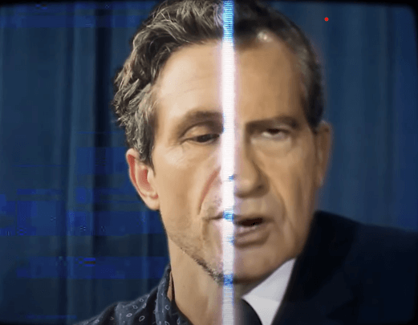
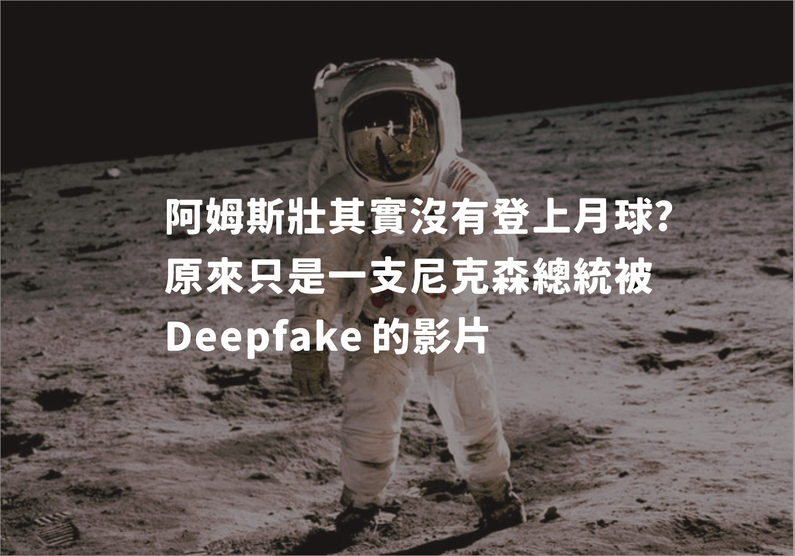

有影沒影? Deepfake 究竟造成了什麼影響?
圖文製作: 程至榮
Deepfake (深偽) 早已問世多年，人們可以透過這項 AI 技術製作假以亂真的圖片、聲音及影像，甚至達成「影片換臉」的效果。
近年來，閱聽人所會接觸到的造假影音已經不再只是改個標題、旁白這麼單純了，換臉技術的盛行讓偽造影片更難以辨識。
如果你以前看過 Deepfake 影片，也許當時你對它的評價會是 "表情很假"、"缺陷明顯"， 然而隨著技術發展，現在的開發者已經能夠做出接近完美無瑕的換臉影片了。在這種情況下，人們是否還能正確分辨出偽造影片呢 ?
1969 年 7 月 20 號，美國宣布阿波羅 11 號安全登陸月球。大部分的人都相信，人類真的成功的登月，完成了這項劃世代的壯舉。
不過在事隔 51 年的同月同日， 網路卻出現了一支尼克森總統宣布美國登月失敗的紀錄短片，影片剪入了不少當年火箭發射的盛況，且它的氛圍忠實的呈現了當年電視特有的模糊畫面以及嘶嘶聲; 更重要的是影片後半段，尼克森總統本人宣讀講稿的鏡頭可說是毫無破綻，讓人找不到理由去懷疑影片的真實性。
難以置信的是，這支名為 《In Event of Moon Disaster》的紀錄片卻完全是用 AI 技術 "偽造" 的 ! MIT 先進虛擬技術中心（Center for Advanced Virtuality）利用 DeepFake 創造了這支短片，只為了向世人警示: 在 Deepfake 技術趨近成熟的現代，眼見不一定為憑，要分辨出偽造影片將會愈來愈困難。
研究團隊以尼克森總統過去在越南的演講影片為基底，並請來演員模仿總統演講的語調來訓練 AI 模型，總共耗時了 3 個月才完成這 6 分鐘的短片。儘管以目前的技術來說，要完成如此高質量的偽造影片依舊是一件不容易的事，不過研究團隊也提到 ，隨著 Deepfake 的技術一直進步，製作假影片的難度、成本只會愈來愈低，估計在一年內連普羅大眾都能輕易的製作難以破解的 "深假 " 影片了。
Deepfake 的普及讓假訊息的威脅提升了一個檔次，有心人士能夠用更加複雜、難以辨別的手段操弄事實，讓人無法輕易的從影音看出真偽。AI 合成技術可能被蓄意用來惡搞、破壞他人名聲，像是諷刺前高雄市長韓國瑜的惡搞電影片段 、假冒《神力女超人》女主角 Gal Gadot 的換臉成人影片等，網民可以用 Deepfake 假造一個人從未做過的事、藉社群媒體的力量讓偽造訊息廣為流傳，然而當事人卻難以為自己澄清真相。
現代的網路社群發達、消息傳播快速，然而許多用戶並無事實查核的觀念，這些社群因此變成了散播假資訊的溫床。不只普通民眾，一些公眾人物、熱門粉專都可能曾在未經查證的情況轉發錯誤資訊，閱聽人根本難以分辨消息的真實性。
除此之外，有研究指出假新聞的傳播比正確資訊更快、更遠 ，如果這些真偽莫辨的 Deepfake 影音不受管控，無疑會降低炒作輿論、風向的難度。礙於言論自由，過去各大社群媒體如 Facebook、Twitter 對於 Deepfake 影片多半採取放任的態度，然而隨著造假問題的升級，迫使他們不得不修正規範，移除那些刻意用 Deepfake 扭曲事實的影音。
過去臉書對於假消息、Deepfake 影片採消極放任，藝術家 Bill Posters 因此以臉書創辦人祖克伯為主角創造了一部 Deepfake 短片，藉此提高大眾對偽造影音的警戒心
由於 Deepfake 的應用已相當普及，進幾年來也有愈來愈多的人們認識了這種換臉技術。然而 Deepfake 難以判別，許多民眾無法看出影音是否有被人動過手腳，因此它直接、間接的助長了謠言的散播。
根據《華盛頓郵報》 的報導，2018 年中非加彭共和國的官媒宣布其總統 Ali Bongo 因健康問題住院，自此以後總統就消失匿跡，官方也鮮少透漏他的相關訊息。藉著這個機會，政權的反對派開始向民間散佈總統 "患重疾過世" 的聳動謠言，導致人心惶惶、民眾們擔憂政府是否失去了領導能力。
隨著謠言爆發，總統 Bongo 終於在 2019 首度公開露面，發布了一支新年的祝賀致詞。一般來說這支影片應該已足夠作為總統還活著的證據，然而畫面中的總統卻眼神呆滯、面部僵硬，不免讓人質疑它的真實性。有些反對黨就試圖向大眾證明總統的怪異表情並非由健康問題導致，而是影片本身就是由 Deepfake 偽造的 。因為這支影片，當年的 1 月 7 日加彭國家廣播電台就遭軍隊的武裝人員佔領，策動者認為影片傳達了 Bongo 無法執政的訊息，遂而發動了這起政變。
雖然後來這部致詞影片經過專業的測試後被確認應該不是 Deepfake, 總統也再次在民眾面前現身，但仍未平息謠言造成的影響。民眾因為質疑總統的執政能力要求法院對 Bongo 做出更多限制，且至今仍然可以在網路上看到一些關於 Bongo 死亡的陰謀論。
這個案例足以證明 Deepfake 對資訊社會的影響力有多大，人們可以輕易、快速的製作換臉影片造謠，讓社群媒體上參雜了真假不明的影音混淆民眾，但查核人員們卻需要花費更多時間用算法去確認真實性。雖然一般人做出的影片可能充滿瑕疵，但假消息並不需要毫無缺憾才能產生影響力，聳動駭人的內容足以吸引大量群眾轉傳。通常，等被造謠的當事人發現自己成為受害者時，謠言已經如洪水般四處灌送，只能用十倍、百倍的精力來為自己澄清真相。
# 假影音防不勝防，閱聽人該怎麼做?
雖然 Deepfake 在現有技術上仍然存在不足之處，然而這些缺點終究會被克服，偽造影片的質量也會愈來愈高。面對這種高科技，我們到底該怎麼做呢?
身為普通民眾，也許我們無法像專業人士般找出假影片的蛛絲馬跡，不過還是有方法能夠讓自己不輕易被欺騙，甚至淪為宣傳的幫兇。 以下提供幾個重要的心法給讀者參考。
1. 先別轉發，對影音抱持懷疑態度
任何剛出現的消息都有可能被證實為造假資訊，閱聽人需要停止立即分享的衝動。 不單只是 Deepfake, 各種影像、圖片類的資訊其實都存在很大的操弄空間，冒然分享其實是很不負責任的行為。如果本身沒有查證能力，也至少應該等到資訊完整公開以後才進行評斷。
2. 確認消息是否出自可信的媒體
閱讀新聞需要確認消息來源的可信度，詳細檢查新聞的生產履歷。如果新聞的撰寫者、事發地點/時間、報社背景不明或是有問題，都會大幅降低這則資訊的可信度，往後讀者應該更加小心相關媒體釋放的消息。 文末會附上公視新聞實驗室所提供的優劣媒體名單連結，讀者不妨檢查一下自己平常關注的媒體究竟評價如何。
3. 善用工具，檢核影音疑點
網路上其實有許多便利的工具讓非專業人士也能嘗試自己進行事實查核，像是 InVID 這個 Chrome 的擴充功能，它就是一個用來核實影音內容的分析工具，只要貼上連結就能得到影片上傳時間、地點、頻道描述等各種詳細資訊，甚至能同時在多個瀏覽器像是 Google、Yandex、Tineye 等進行以圖搜圖，幫你找出最相關的內容。
這邊我們也附上公視 - 社群內容打假術 的網頁連結，讀者可以透過這個網站了解更多查核工具。
4. 交叉比對，尋求專家協助
最重要的打假心法就是要去交叉比對不同報導、尋求專家的協助。 過於仰賴特定的資訊來源是非常不妥的，像是過去俄羅斯曾透過透過粉專操縱民意、影響美國大選，這些粉專追蹤人數破萬，然而卻會在取得大眾信任後才開始灌輸錯誤消息，因此我們不該單方面的接受訊息，主動去比對不同資訊管道才是正確心態。
近幾年來「事實查核運動」在全球蓬勃發展，查核組織吸收了來自各個領域的專業人士，致力於抑制虛假資訊、為社會帶來準確的真相。台灣其實也有不少公正的第三方查核組織，且大多設置都有申訴專區協助闢謠。減少錯誤資訊需要大家的努力，下面就提供幾個有名的查核服務給讀者參考，往後遇到奇怪的影音，不妨轉向這些專家們尋求協助!
【台灣事實查核中心】
國內第一家獲得國際事實查核聯盟（IFCN）認證的組織，由優質新聞發展協會與台灣媒體教育觀察基金會共同成立，屬非營利性質的查核組織。查核結果一般分為真實、部分錯誤、錯誤等三級，並提供申訴專區讓民眾一同參與。
【蘭姆酒吐司】
蘭姆酒（RUM）是來自謠言(RUMOR)的字首，吐司則是取自真相（TRUTH)的諧音。 致力於破解網路謠言，並設有 Line 官方帳號 、臉書官方帳號 供民眾洽詢!
點我看參考資料- MIT 互動網站 - In event of moon disaster
- Tackling the misinformation epidemic with “In Event of Moon Disaster” - MIT News
- How misinformation helped spark an attempted coup in Gabon - The Washington Post
- 假新聞出沒！ 破解 #媒體與牠們的產地 ft.劣質媒體黑名單 - 公視新聞實驗室
- 【社群內容打假術5】查核工具彙整：開箱數位打假王的百寶袋！ - 公視新聞實驗室
- 抗議臉書控管假消息不力 人們用Deepfake自製祖克伯影片反諷 - 地球圖輯隊
- 什麼是 Deepfake（深偽技術）? A 片女主角也可以造假! - 趨勢科技
- 資訊戰是什麼？PUMA函授完整版 - 沃草【資訊戰然後呢 EP1】
- Facebook wouldn’t delete an altered video of Nancy Pelosi. What about one of Mark Zuckerberg? - The Washington Post